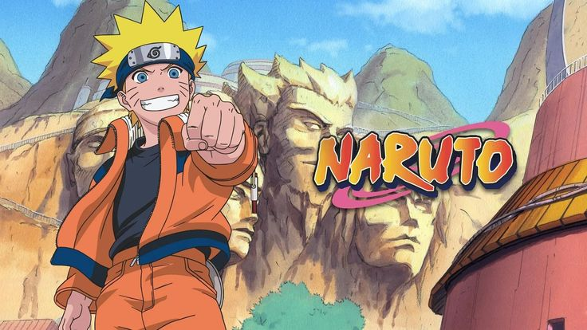

Naruto Uzumaki, an orphan boy from the Hidden Leaf Village, dreams of becoming Hokage (the strongest ninja leader) so he can earn respect. Unknown to many, he has the Nine-Tailed Fox sealed inside him, which caused villagers to fear and shun him.
Naruto returns to the Hidden Leaf after training for two years with Jiraiya. He grows stronger to fight the Akatsuki, an organization hunting the Tailed Beasts. Naruto faces powerful enemies, learns the truth about his parents, and bonds with Kurama (the Nine-Tails).
Boruto Uzumaki, the son of Naruto (the Seventh Hokage), struggles to step out of his father’s shadow. Unlike Naruto, Boruto is talented and confident but often feels burdened by expectations. Along with Sarada Uchiha and Mitsuki
The Akatsuki is a powerful and feared organization of rogue ninja who abandoned their villages. Originally formed by Yahiko to bring peace, it was later led by Nagato (Pain) and manipulated by Madara Uchiha and Obito Uchiha. Their main goal was to capture all Tailed Beasts and use them as weapons to create a new world order. Each member is an S-rank criminal, known for their exceptional abilities, and they wear distinctive black cloaks with red clouds and unique rings. The group includes infamous shinobi like Itachi Uchiha, Kisame Hoshigaki, Deidara, Sasori, Hidan, Kakuzu, Konan, and Zetsu. The Akatsuki became one of the greatest threats to the ninja world, directly clashing with Naruto and the Hidden Leaf.
Naruto Uzumaki is the main character of the Naruto series. He is a ninja from the Hidden Leaf Village, known for his cheerful, determined, and stubborn personality. Orphaned at birth and shunned because he carries the Nine-Tails Fox spirit inside him
Sasuke Uchiha is one of the main characters in Naruto. He is a skilled ninja from the Uchiha clan, known for their powerful Sharingan eyes. After his brother Itachi kills their entire clan, Sasuke becomes obsessed with gaining strength to take revenge
Sakura Haruno is one of the main characters in Naruto and a member of Team 7, alongside Naruto Uzumaki and Sasuke Uchiha, under Kakashi Hatake's leadership